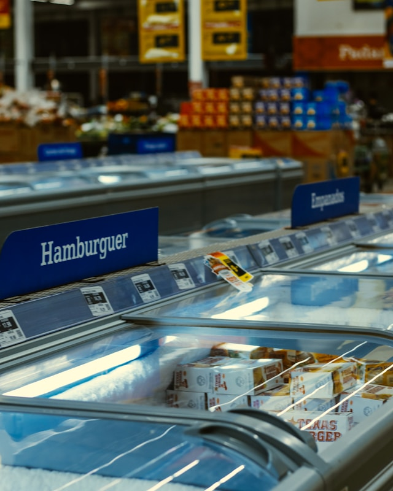

Galería de Imágenes




Acerca de nosotros
Fundado en 2024 por Doña Carmen Silvia Salas Lobos, una apasionada de la nutrición y la sostenibilidad. "Te lo Vendo" comenzó como una pequeña tienda de barrio. Con el paso de los años, hemos crecido gracias al apoyo de nuestra comunidad, convirtiéndonos en un referente de calidad y compromiso ambiental en Santiago.
Ofrecemos una amplia gama de productos orgánicos y locales y también servicios adicionales como entrega a domicilio, asesoría nutricional y talleres sobre alimentación sostenible.